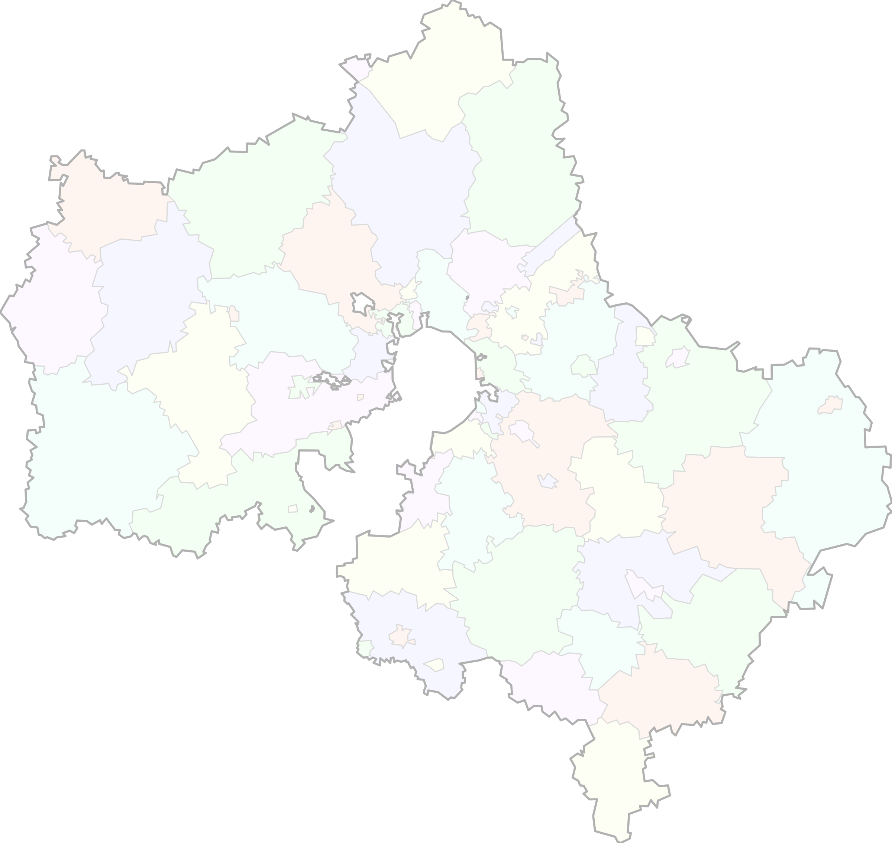

Балашиха
Balashiha
Богородск
Bogorodsk
Бронницы
Bronnici
Власиха
Vlasiha
Волоколамск
Volokolamsk
Воскресенск
Voskresensk
Восход
Voshod
Дзержинский
Dzerzinskij
Дмитров
Dmitrov
Долгопрудный
Dolgoprudnij
Домодедово
Domodedovo
Дубна
Dubna
Егорьевск
Egorevsk
Жуковский
Zykovskij
Зарайск
Zaraisk
Звёздный городок
Zvezdni_Gorodok
Истра
Istra
Кашира
Kashira
Клин
Klin
Коломна
Kolomna
Королёв
Korolev
Котельники
Kotelniki
Красногорск
Krasnogorsk
Краснознаменск
Krasnoznamensk
Ленинский
Leninskij
Лобня
Lobnia
Лосино-Петровский
Losino_Petrovsk
Лотошино
Lotoshino
Луховицы
Luhovici
Лыткарино
Litkarino
Люберцы
Luberci
Можайск
Mozaisk
Мытищи
Mitishi
Молодёжный
Molodeznij
Наро-Фоминск
Naro_Fominsk
Одинцово
Odincovo
Орехово-Зуево
Orehovo_Zyevo
Павловский
Посад
Pavlovski_Posad
Подольск
Podolsk
Протвино
Protvino
Пушкино
Puskino
Пущино
Pushino
Раменское
Ramenskoe
Реутов
Reutov
Рошаль
Roshal
Руза
Ruza
Сергиев Посад
Sergiev_Posad
Серебряные
Пруды
Serebranie_Prudi
Серпухов
Serpuhov
Солнечногорск
Solnechnogorsk
Ступино
Stupino
Талдом
Taldom
Химки
Himki
Черноголовка
Chernogolovka
Чехов
Chehov
Шатура
Shatura
Шаховская
Shahovskaj
Щёлково
Shelkovo
Фрязино
Frazino
Электрогорск
Elektrogorsk
Электросталь
Elektrostal
Подпись шкалы
Малая
Большая

Городской округ
Потреб
Труд
Целев
Порог
ПОТРЕБНОСТЬ (2023)